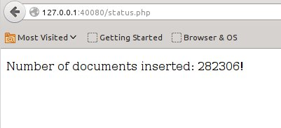

Goals
The goal of this tutorial is to let you issue a query from your
browser, that is executed by a PHP script on an nginx webserver and to
understand the execution of the query. All prerequisites you need are
delivered as docker image. You only need to have docker installed. The
tutorial will take about 30 Minutes to complete. Have fun !
Introduction
To execute the steps of this tutorial you need some intermediate
knowledge about unix shell programming and it would be helpful to know
basics about PHP. For the analyzer
configuration a simple proprietary definition language is used. But it
will not be alien for users that have seen other configuration languages
before.
In this tutorial you will download the dataset to build the search
index with, preprocess the data with some lines of bash, create a
storage for the index, define a configuration for analyzing the data,
feed the search index, and finally issue a query with a PHP script. All
prerequisites like the nginx webserver, PHP and the strus libraries and programs are available as a docker image. So all you need is to get docker installed on your machine.
The dataset used in this tutorial is from MusicBrainz (musicbrainz.org). Please respect the license of this dataset !
Background
The background of this tutorial is the project strus, hosted on github. For having a look how strus copes with a bigger data collection you could also have a look at the demo search on the complete Wikipedia collection
(English). You will find there also a description about this project.
The complexity of the Wikipedia project would burst all limits of a
tutorial. This tutorial just aims to show how easy it is to build a
search engine with strus based on a small collection (282'000) of small
data records (about a dozen terms) with a simple structure.
Prerequisites
You need a docker installation.
For running the tutorial you need an internet connection.
Step 1: Start the docker container
To start the docker image typing the follwing command in your shell:
Hide Copy Code
docker run -p 40080:80 -t -i patrickfrey/strus-ub1404-nginx:v0_2 /bin/bash
and you will get a promt like this
Hide Copy Code
root@8cbc7f49f3cf:/home/strus#
All following shell commands of this tutorial are executed in this docker container shell.
Step 2: Download and prepare the data
If you want to skip this section, you can simply execute the script step_fetchData.sh. This script will execute the steps described here in about a minute on a convenient developer machine.
Otherwise you have to manually fetch the data from MusicBrainz.
The dump of the record releases will be dumped and converted into a
proprietary XML we will use. Because there are many items to process, we
will put up to 100 entries into one file. The analyzer will be
configured to handle one item of these 100 entries as one document.
Download and decompress the data with the following commands:
Prepare data directory
We create a directory for the data because the MusicBrainz files are all unpacked in current directory.
Hide Copy Code
mkdir data
cd data
Download and uppack the data dump
Hide Copy Code
wget http:LATEST=`cat LATEST`
wget http:bzip2 -d mbdump-cdstubs.tar.bz2
tar -xvf mbdump-cdstubs.tar
Create the documents
We count the maximum document identifier that
will be assigned and we set $ndocs as the maximum number of documents we
will get. In every document will be at maximum 100 items to insert. For
every document identifier we create a document with the XML header.
Hide Copy Code
cat mbdump/release_raw | sed 's/\&/\&/g' | sed 's/</\</g' | sed 's/>/\>/g' > dump.txt
ndocs=`cat dump.txt | awk -F"\t" '{if(min=="")min=max=$1; if($1>max) {max=$1}; if($1< min) {min=$1}; } END {print int((max+1)/100)}'`
mkdir doc
idoc=0
while [ $idoc -le $ndocs ]
do
echo "<?xml version=\"1.0\" encoding=\"UTF-8\" standalone=\"yes\" ?>" > doc/$idoc.xml
echo "<list>" >> doc/$idoc.xml
idoc=`expr $idoc + 1`
done
Fill the documents with the content of the dump
For every entry we want to process, we create an own XML tag. Every record is marked with an '<item>...</item>' tag.
Hide Copy Code
cat dump.txt \
| awk -F"\t" '{FNAME=int($1/100); print "<item><id>" $1 "</id><title>" $2 "</title><artist>" $3 "</artist><date>" $4 "</date><upc>" $9 "</upc><note>" $10 "</note></item>" >> "doc/"FNAME".xml" }'
idoc=0
while [ $idoc -le $ndocs ]
do
echo "</list>" >> doc/$idoc.xml
idoc=`expr $idoc + 1`
done
Leave the data directory and inspect the result
We have now preprocessed the MusicBrainz example
collection with about 282'000 records. We go back to the upper directory
and inpect what we got. There should be about 3200 files and each file
should contain about 100 items.
Hide Copy Code
ls doc/
You get:
Hide Copy Code
0.xml 1267.xml 1536.xml 1805.xml 2074.xml 2343.xml 2612.xml 2882.xml 3150.xml 461.xml 730.xml
1.xml 1268.xml 1537.xml 1806.xml 2075.xml 2344.xml 2613.xml 2883.xml 3151.xml 462.xml 731.xml
... (more)
Here is an except of an example input file for strus. You can inspect the first 5 lines with:
Hide Copy Code
head -n 7 doc/999.xml
We get:(may differ a little bit because the data used gets updated from time to time)
Hide Copy Code
="1.0" ="UTF-8" ="yes"
<list>
<item><id>99929</id><title>Flutterstrut</title><artist>Hundred Year Flood</artist><date>2009-06-18 01:37:51.35028+00</date><upc>881387000018</upc><note>CD Baby id:hyf2</note></item>
<item><id>99999</id><title>The Hanging Garden</title><artist>Hypnotique</artist><date>2009-06-18 01:37:52.548532+00</date><upc>634479159961</upc><note>CD Baby id:hypnotique</note></item>
<item><id>99994</id><title>Hypnopilot</title><artist>Hypnopilot</artist><date>2009-06-18 01:37:52.49057+00</date><upc>088907200068</upc><note>CD Baby id:hypnopilot</note></item>
<item><id>99995</id><title>The Sphinx of Imagination</title><artist>Hypnotica</artist><date>2009-06-18 01:37:52.503809+00</date><upc>634479143427</upc><note>CD Baby id:hypnotica</note></item>
Every file created contains about 100 items to insert as document.
The grouping of multiple items has been done to reduce the number of
files created.
Step 3: Create the storage
Initialize the storage database
We will use the utility programs of strus to create the storage and insert the documents into the search index.
We have one data element 'date' we would like to use for meta data
restrictions. The meta data used for restrictions are put into the meta
data table. We can at any time alter the meta data table or add new
elements with the command strusAlterMetaData. But we can also define some meta data within the strusCreate command.
The command to create the storage looks as follows.
Hide Copy Code
strusCreate -s "path=storage; metadata=date UINT32"
The first argument describes the properties of
the storage created with a semicolon-separated list of configuration
assigments. The path argument of it defines the directory the key/value
store database based on leveldb will write its files to. The storage
configuration string is dependend on the storage and key/value store
database we use. All following commands introduced in this tutorial
later that refer to a storage will have a configuration string parameter
with the same syntax, but depending on the case with different
parameters.
With this call the storage has been created in the subdirectory 'storage'. Type
Hide Copy Code
ls storage
and you will see (LevelDB files)
Hide Copy Code
000005.log CURRENT LOCK LOG LOG.old MANIFEST-000004
Step 4: Configure the document analyzer
We will use the standard document segmenter as we
will process XML documents. The analyzer configuration describes, what
elements will be extracted from the items and how items are defined. It
also describes how these items are transformed into the form they are
stored. The analyzer configuration defines different sections that
describe what type of elements are created. For creating an analyzer
configuration we create a file with the extension ".ana" and start to
edit it:
Hide Copy Code
touch tutorial.ana
vi tutorial.ana
The following sub sections show what we define in this configuration file. The complete analyzer configuration is defined in tutorial.ana. The segmenter used in this tutorial defines XML selection expressions is the abbreviated syntax of XPath with 2 exceptions:
- Tag selections like "/list/item/title" do not select a subtree but just the tag.
- Contect selections like "/list/item/title::text()" are written as "/list/item/title()" (the "::text" is omitted).
Define the items to index (collection units aka documents)
As we saw in the preparation of the documents
there are about 100 items inserted into one file. For separating these
items as documents to insert we have to define a section document that
defines what selection expression defines a document in an input file:
Hide Copy Code
[Document]
doc = /list/item;
Define the the search index (retrievable items)
The elements that are subject of retrieval are
put into the section [SearchIndex]. We decide to make words in the tags
"title","artist" and "note" retrievable.
All of them we tokenize the same way (as words) and we use the snowball
stemmer ("stem") followed by a lowercase conversion ("lc") and a
diacritical character conversion ("convdia") to normalize them.
Our language we instrument the stemmer and the diacritical characer conversion with is English ("en").
The feature type name we assign to the produced search index features is for all features "word".
Hide Copy Code
[SearchIndex]
word = convdia(en):stem(en):lc word /list/item/title();
word = convdia(en):stem(en):lc word /list/item/artist();
word = convdia(en):stem(en):lc word /list/item/note();
Intuitively this configuration is understod if
you read every feature assignment from right to left: Select an element,
select the tokens from an element selection, normalize the tokens: "lc
-> stem -> convdia" and assign them to a feature type "word".
Define the elements the forward index (for summarization)
The elements that are used for summarization are
put into the section [ForwardIndex]. We decide to use the retrievable
words in the tags "title","artist" and "note" also for summarization to
show what query features matched in the document. Because the summary
should show the original content of the document without markup, we use a
whitespace tokenizer ("split") and no normalizer ("orig") to convert
them for insert.
Hide Copy Code
[ForwardIndex]
orig = orig split /list/item/title();
orig = orig split /list/item/artist();
orig = orig split /list/item/note();
Intuitively this configuration is understod as the search index definition by reading the processing steps from right to left.
Define the attributes
Now assign some attributes to each document
inserted. Attributes are used in the representation of the result. There
is one reserved attribute name that is very important for our case. It
is the attribute "docid". When defining it, the strusInsert
program will define the content of this attribute as document
identifier. If you do not define it, the input file path will be used as
document identifier. Because the document identifier has to be unique,
we have to create one when there are multiple documents grouped in one
input file as we did before. For all four elements we will use a
tokenization ("content") and normalization ("orig"), that keeps the
elements in their original state:
Hide Copy Code
[Attribute]
docid = orig content /list/item/id();
title = orig content /list/item/title();
upc = orig content /list/item/upc();
note = orig content /list/item/note();
The definitions of the section attribute is read
intuitively from right to left as the elements introduced before with
the exception that the leftmost identifier specifies the name of the
attribute the value is assigned to.
Define the meta data
As final step we assign the meta data element
'date' we want to use for restrictions but also in the representation of
the result. For converting the date into a format we can use as meta
data table element we use the 'date2int' normalizer. As start date of
the date as integer calculation we chose the year of the invention of
the phonograph by Thomas Edison and we define the unit as number of days
since then. The input format we deduce by looking at an input sample
(bravely assuming here that all dates have the same format):
Hide Copy Code
2009-06-18 01:37:52.503809+00
The tokenization is just forwarding the tag content. Here is the configuration of the date:
Hide Copy Code
[MetaData]
date = date2int("d 1877-01-01", "%Y-%m-%d %H:%M:%s *") content /list/item/date();
The definitions of the section attribute is read
intuitively from right to left as the elements introduced before with
the exception that the leftmost identifier specifies the name of the
meta data element the value is assigned to.
Check the configuration
The be sure that we got everything right, we now
test what we got with one candidate input file. We can do this by
calling the program strusAnalyze with our configuration and an input file:
Hide Copy Code
strusAnalyze tutorial.ana doc/2333.xml | less
We have a look at the first document analyzed and
see that all went well (Multi part document results of the strusAnalyze
program are separated by '-- document ' followed by the identifier
assigned to it in the [Document] section):
Hide Copy Code
-- document doc
search index terms:
1 word 'live'
2 word 'in'
3 word 'milan'
5 word '27'
6 word '9'
7 word '1956'
8 word 'maria'
9 word 'calla'
forward index terms:
1 orig 'Live'
2 orig 'in'
3 orig 'Milan'
4 orig '(27,9,1956)'
8 orig 'Maria'
9 orig 'Callas'
metadata:
date '48527'
attributes:
docid '233372'
title 'Live in Milan (27,9,1956)'
Check single steps of the analyzer configuration
What do we do when something went wrong when checking a document with strusAnalyze ?
Let's assume that our output was empty. There are tools to check the different steps of document analysis. The first program is strusSegment that allows us to check wheter a selection expression matched. Let's take the document title as example:
Hide Copy Code
strusSegment -e '/list/item/title()' doc/2333.xml | head -n 2
The output looks as follows:
Hide Copy Code
'Live in Milan (27,9,1956)'
'Greatest Hits'
This looks good as expected. The second program for checking analyzer steps is strusAnalyzePhrase.
This program allows us to check tokenizers and normalizers used in the
configuration. Let's check if words are tokenized and normalized
correctly:
Hide Copy Code
echo 'Live in Milan (27,9,1956)' | strusAnalyzePhrase -n "convdia(en):stem(en):lc" -t "word" -
This leads to the following output:
Hide Copy Code
1 'live'
2 'in'
3 'milan'
4 '27'
5 '9'
6 '1956'
At the first glance this looks good. But why are the positions
assigned different compared with the analyzer run? The word '27' has
position 5 when passed through the analyzer with our configuration and 4
when calling strusAnalyzePhrase. The reason is that the positions are
assigned globally to all elements of the configuration. Every by byte
position in the document defined by any tokenizer configured is
respected when assigning the word positions. The strusAnalyzePhrase does
not have this information, so it assigns the positions ascending.
Because we have added in the analyzer configuration a method that
produces a token '(27,9,1956)' that has a byte position between "Milan"
and "27", this token gets the word position 4. The token '27' gets the
following position assigned, in our example 5. The reason for this is
that the positions of all the features in the forward index and the
search index have to be in sync to define their occurrence relation by
their word position.
Step 5: Insert the documents into the storage
We got now the analysis of the documents done. Now we would like to insert the documents into the storage created. The program strusInsert
helps us to do that. It has several options to boost the insert
process. It depends very much on the collection and the hardware used
which parameters are best.
If we know that all documents inserted are new, then we should specify
the option '-n' ('--new'). In this case the inserter can assume that all
files inserted are new and thus it can allocate document numbers in
ranges. Otherwise the storage issues an immediate write for every new
document inserted and this slows down the insert process dramatically
because we have only new documents now.
Another important option is '-c' ('--commit') that sets the number of
documents inserted within one transaction. Because out documents are
very small (less than a dozen terms), the default of 1000 is not very
reasonable. Better is 50000.
Here is our insert command with the proposed options for this collection:
Hide Copy Code
strusInsert -n -c 50000 -f 100 -s "path=storage" tutorial.ana doc
that does not use multiple inserter threads
(default), commits an open transaction after 50000 documents inserted,
preallocates document numbers in ranges and fills the storage in the
folder 'storage' with XML documents analyzed with the configuration
tutorial.ana. This should output the following 2 lines after roughly a
minute or half a minute:
Hide Copy Code
inserted 282291 documents (total 282291), 0 transactions open
done
Step 6: Inspect the storage
The following examples use the dump from 29th of June 2015. You might get different results with another dump.
Now as we have inserted all documents we are curious to see if everything went right. There is a program strusInspect
that lets us inspect some properties of the storage. We chose the
document with the document id '10009'. First we find out what internal
document number this docid got:
Hide Copy Code
strusInspect -s "path=storage" docno 10009
we get
Hide Copy Code
123
Then we do some calls to inspect this document
Hide Copy Code
strusInspect -s "path=storage" attribute docid 123
strusInspect -s "path=storage" content orig 123
strusInspect -s "path=storage" attribute title 123
strusInspect -s "path=storage" pos word danc 123
strusInspect -s "path=storage" ff word danc 123
strusInspect -s "path=storage" df word danc
strusInspect -s "path=storage" metatable
strusInspect -s "path=storage" metadata date 123
and we get
Hide Copy Code
10009
Absolute Let's dance 13 Various
Absolute Let's dance 13
4
1
1575
date UInt32
48253
If we want to check all the content of a storage, we can use the programs strusCheckStorage and strusCheckInsert.
Step 7: Example query with PHP
In this section we examine the possibility to
issue queries in a scripting language. As example we use the PHP
bindings to query our strus storage built. The PHP scripts running in
the webserver context can not directly access the storage files. The
strus PHP commands issued are using a proxy implementation of the strus
interface that redirect the calls to be executed on a server. This
server is implemented as program strusRpcServer.
Because we started the image with a shell, the docker CMD starting the
strus server was ignored. So we have to start it by hand in the
background:
Hide Copy Code
strusRpcServer -s "path=storage" &
Test execution chain
We start with a simple PHP script that asks the strus storage for the number of documents inserted. We call the script status.php:
Hide Copy Code
<!DOCTYPE html>
<html>
<body>
<?php
require "strus.php";
try {
$context = new StrusContext( "localhost:7181" );
$storage = $context->createStorageClient( "" );
echo '<p>';
echo "Number of documents inserted: " . $storage->nofDocumentsInserted() . "!";
echo '</p>';
}
catch ( Exception $e) {
echo '<p><font color="red">Caught exception: ' . "{$e->getMessage()}</font></p>";
}
?>
In order to make it accessible for nginx, we have
to copy it to the web servers html pages root directory and give it the
right permissions:
Hide Copy Code
cp status.php /usr/share/nginx/html/
chown www-data:www-data /usr/share/nginx/html/status.php
chmod +x /usr/share/nginx/html/status.php
Now we can call it via HTTP, say we can enter the
following URL into a web browsers address bar. We have specified port
40080 when starting the strus docker container, so we also specify it
here:
Hide Copy Code
http:
and we get:

Issue a query
Now we try to create a simple page showing a
ranked list of best matches to a query passed as GET parameters. We call
the PHP source file search.php:
Hide Shrink  Copy Code
Copy Code <!DOCTYPE html>
<html>
<body>
<?php
require "strus.php";
function evalQuery( $queryString, $minRank, $maxNofRanks)
{
$context = new StrusContext( "localhost:7181" );
$storage = $context->createStorageClient( "" );
$analyzer = $context->createQueryAnalyzer();
$queryeval = $context->createQueryEval();
$analyzer->definePhraseType( "qry", "word", "word",
["lc", ["stem", "en"], ["convdia", "en"] ] );
$queryeval->addWeightingFunction( 1.0, "tf", [".match" => "qry" ]);
$queryeval->addSummarizer( "DOCID", "attribute", [ "name" => "docid" ] );
$queryeval->addSummarizer( "TITLE", "attribute", [ "name" => "title" ] );
$queryeval->addSelectionFeature( "sel");
$query = $queryeval->createQuery( $storage);
$terms = $analyzer->analyzePhrase( "qry", $queryString);
if (count( $terms) > 0)
{
$selexpr = [ "contains" ];
foreach ($terms as &$term)
{
$selexpr[] = [ $term->type, $term->value ];
$query->defineFeature( "qry", [ $term->type, $term->value ], 1.0 );
}
$query->defineFeature( "sel", $selexpr, 1.0);
}
$query->setMaxNofRanks( $maxNofRanks);
$query->setMinRank( $minRank);
return $query->evaluate();
}
parse_str( getenv('QUERY_STRING'), $_GET);
$queryString = $_GET['q'];
$nofRanks = 20;
$minRank = 0;
if (array_key_exists( 'n', $_GET))
{
$nofRanks = intval( $_GET['n']);
}
if (array_key_exists( 'i', $_GET))
{
$minRank = intval( $_GET['i']);
}
$results = evalQuery( $queryString, $minRank, $nofRanks);
echo '<table border=1>';
foreach ($results as &$result)
{
$docid = '';
$title = '';
foreach( $result->attributes as &$attrib )
{
if( strcmp( $attrib->name, 'TITLE' ) == 0 ) {
$title = $attrib->value;
}
if( strcmp( $attrib->name, 'DOCID' ) == 0 ) {
$docid = $attrib->value;
}
}
echo '<tr><td>' . $docid . '</td><td>' . $title . '</td></tr>' . "\n";
}
echo '</table>';
?>
Now we copy the file into the webservers document area and set the permissions correctly:
Hide Copy Code
cp search.php /usr/share/nginx/html/
chown www-data:www-data /usr/share/nginx/html/search.php
chmod +x /usr/share/nginx/html/search.php
Now we can call the search page via HTTP, say we
can enter the following URL into a web browsers address bar as we did it
with the status.php page. We search for "party dance", and retrieve the first 10 ranks starting with the best match:
Hide Copy Code
http:
and we get:


 Submit an article or tip
Submit an article or tip


 General
General  News
News  Suggestion
Suggestion  Bug
Bug  Joke
Joke  Praise
Praise  Rant
Rant  Admin
Admin